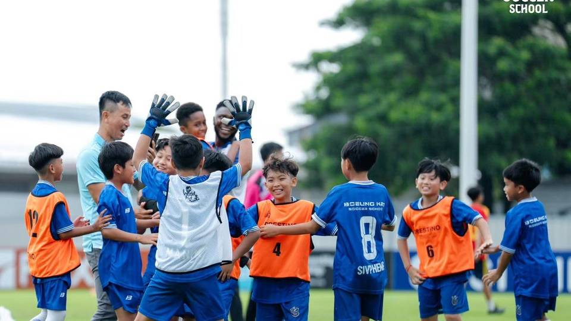

MEMBER
メンバー募集
都内近郊の大学1・2年生を募集しています。サッカーが好きな方、国際協力に興味がある方、経験は問いません。
- 対象
- 大学1・2年生
（大学は問いません） - 活動日
- 毎週火・木 18:00〜22:00
- 活動場所
- 神田駅・飯田橋駅周辺の会議室
現在、14の大学から52名が活動しています。チャリティー大会の企画・運営、協賛企業とのやりとり、SNSでの発信、カンボジアでの活動など、大学生のうちにしかできない経験がたくさんあります。

MEMBER
都内近郊の大学1・2年生を募集しています。サッカーが好きな方、国際協力に興味がある方、経験は問いません。
現在、14の大学から52名が活動しています。チャリティー大会の企画・運営、協賛企業とのやりとり、SNSでの発信、カンボジアでの活動など、大学生のうちにしかできない経験がたくさんあります。
ONE YEAR
小学校支援とDream Challenge Cupを行います。